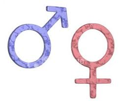
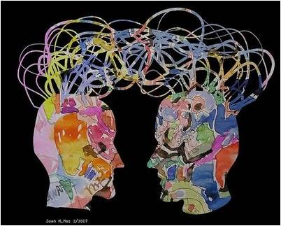
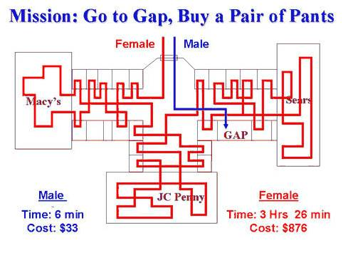

Introduction
Differences between the brains of men and women is an interesting topic that can help to understand different situations in our life.
First, we will explain what the differences are.
Then we will give some examples.
Finally, we will answer your questions.
Points
Both man s brain and woman s brain are unique, but they differ in many ways such as:
- Size
- Brain hemisphere
- Skills
- Speech
- Emotions
Size
Firstly, the size is different.
Men s brains are 10 percent larger than women s and have 4 percent more cells.
Men s brains contain 6.5 times the amount of grey matter, while female s brains contain about 10 times as much white matter related to general
intelligence as male's brains.

Brain hemisphere
Secondly, the brain hemisphere is different.
Men use the left-side of their brains, which is the logical side of the brain.
On the other hand, women use both sides of their brains because they can transfer data between the right and left sides faster than men.
Men are able to focus on small pictures, whereas women are able to focus on big pictures.

Skills
Thirdly, our skills have differences.
Men s systemizing and mechanistic skills are the primary reasons why they are better than women at mathematics, while women s systemizing and
mentalistic skills are the primary reasons why they are better at languages.
For example, when man goes shopping, he is more logical and rational, whereas when woman goes shopping, she is more intuitive and creative.
Another example, men think about one thing; on the other hand, women think more complicated.
Speech
Furthermore, our speech is different.
Men use fewer words per day than women.
While men often talk about sports, money, and business, women most often discuss people, feelings, and relationships.
Men hold their distance and rarely establish eye contact; in contrast, women stand in close to each other and maintain eye contact.
Emotions
Moreover, our emotions have differences.
Women have better communication skills and emotional intelligence than men.
While women talk about people, diet, clothing, and physical appearance, men talk about sports, work, money, cars, news, and politics.
Conclusion
In conclusion, you can see the differences between men and women. These differences are NOT better or worse.